## Exploring open statistical data with TerriaJS Integrating SDMX with the open geospatial web <span style="font-weight: 100; font-size: 50%;">Nick Forbes-Smith — CSIRO's Data61 — Sydney/Hobart, Australia</span><br>
## Terria - An open-source framework for web-based geospatial catalogue explorers - **Cesium/Leaflet** based in-browser tool for looking at 2D and 3D data - Team members are located in Sydney, Melbourne and Canberra - Find us at [terria.io](http://terria.io/)
## NationalMap - Geospatial data discovery, visualisation and sharing - Launched 2014 to support Aus Gov Open Data Policy - 14,000+ datasets, 30,000+ sessions/month 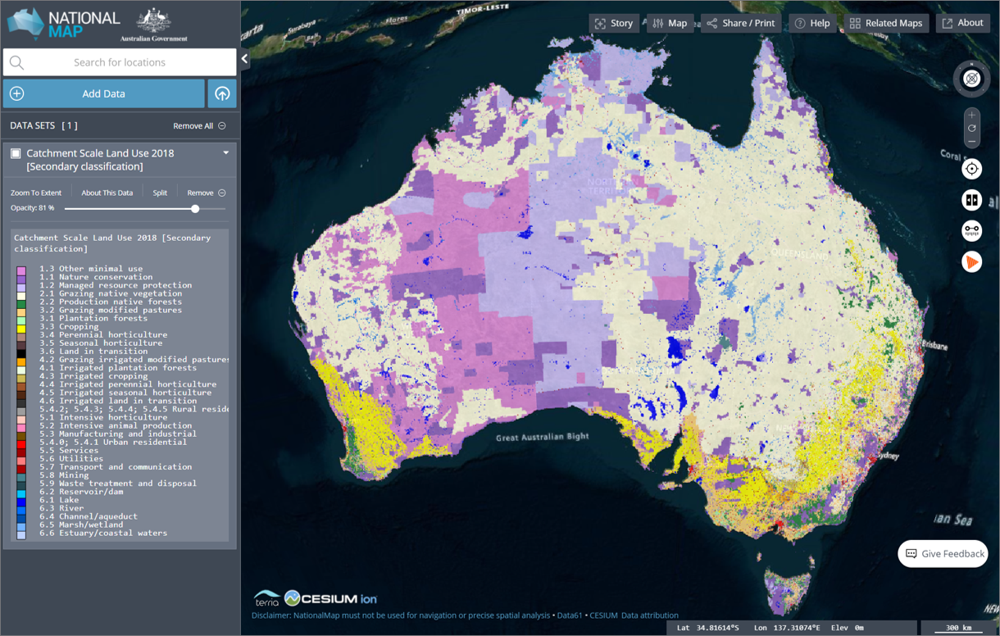</img>
## NSW Digital Twin *"An ecosystem of platforms, infrastructure, data, and information management governance arrangement"* - Lead by Department of Customer Service, Spatial Services (NSW) - Our first in bringing together 2D, 3D, 4D geospatial + BIM, IoT/sensor data 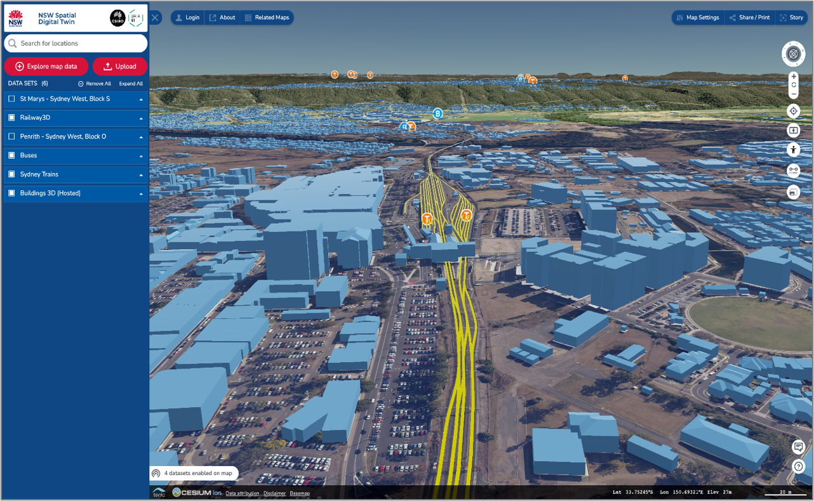</img>
## QLD DT Prototype - Department of resources (QLD) and Advance QLD - Some "richer" datasets 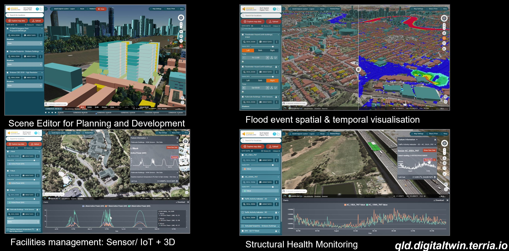</img>
## Vic Digital Twin - VIC Department of Environment land water and planning recently announced their **Digital Twin Victoria Program** - Not yet available to the public - will be around **end of calendar year** 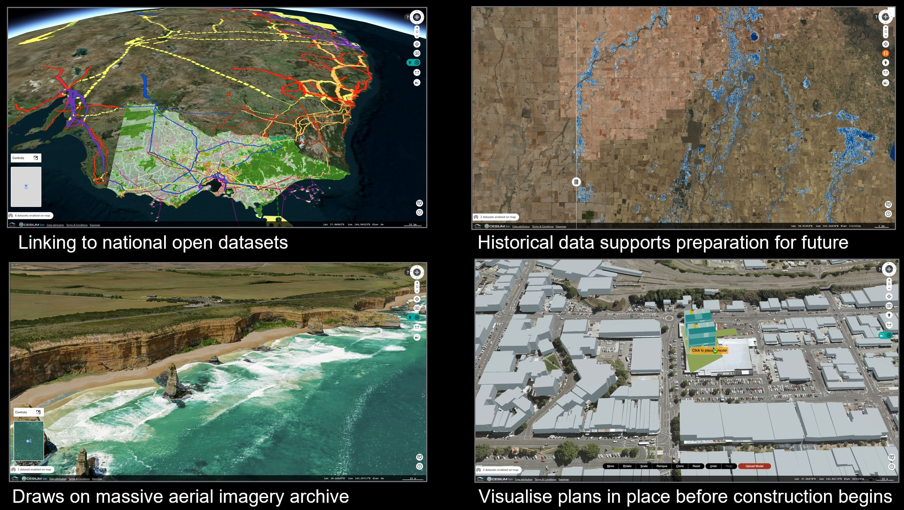</img>
## Digital Earth Aus/Africa - **Landsat/Sentinel satellite imagery** - Satellite imagery derived products and "analysis ready data" - Heavily integrated with **OpenDataCube** 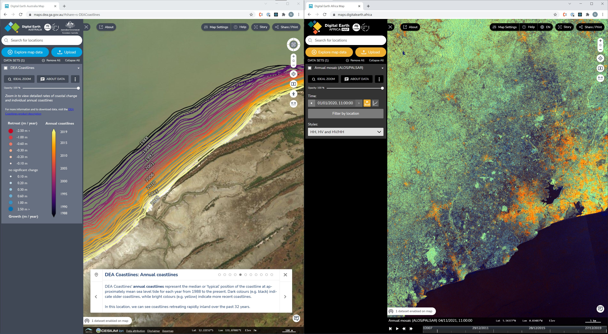</img>
## Maps with SDMX! - NationalMap - **Australian Bureau of Statistics (ABS)** - PacificMap - **Pacific Data Hub (PDH) and the Pacific Community Secretariat (SPC)** 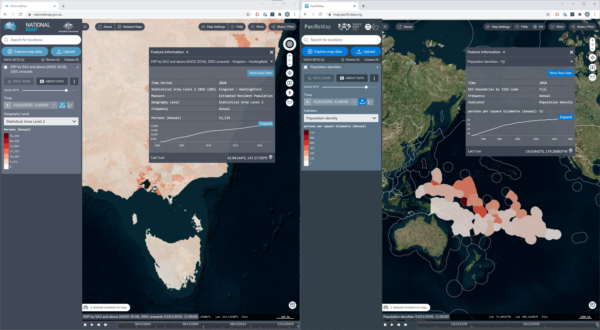</img>
## Terria formats *"Open geospatial web"* - Imagery (tiled services) - Vector - 3D - Tabular/Sensor - Portals
## Imagery - **WMS/WMTS/XYZ sources** - MapboxStyle/Carto/BingMaps - ArcGis Imagery/Map Service
## Vector sources - **Web Feature Service**/ArcGis Feature Service - **GeoJson**/Shapefile/**KML/CZML/GPX/GeoRSS** - **Mapbox Vector Tiles**
## 3D sources - **Cesium 3d-tiles** - **Cesium Terrain** - **GLTF** - **CZML**
## Tabular/Sensor - **CSV** - **SDMX** - **SensorObservationService** - **Socrata** - OpenDataSoft
## Portals - **CKAN** - **CSW** - **Socrata** - OpenDataSoft - **Magda** - **THREDDS** - **WMS/WFS/WPS** - ArcGis - ArcGis Portal + Map/Feature Service - **SDMX**
## What I do Software Engineer - with focus on - 2D data visualisation - vector - raster (GeoTIFF support is coming) - tabular/sensor/point based - API/portal connections - OGC - WMS, WFS, WPS, CSW, SOS - THREDDS - Socrata - OpenDataSoft - SDMX
## SDMX! > SDMX, which stands for ***Statistical Data and Metadata eXchange***, is an **[ISO standard](http://www.iso.org/iso/catalogue_detail.htm?csnumber=52500)** designed to describe statistical data and metadata, normalise their exchange, and improve their efficient sharing across statistical and similar organisations [https://sdmx.org/?page_id=2555/](https://sdmx.org/?page_id=2555/)
## SDMX - who SDMX is sponsored by seven international organisations - Bank for International Settlements - European Central Bank - Eurostat (Statistical Office of the European Union) - International Monetary Fund (IMF) - Organisation for Economic Cooperation and Development (OECD) - United Nations Statistical Division (UNSD) - World Bank
## SDMX - me I am going to be talking about SDMX from a **data consumer** perspective > making calls to API to fetch/discover data and metadata ***Not** interested in data producer/modeling, back-end services...* --------------- - How to discover and organise datasets - How are datasets structured? (before having to download any data) - Downloading subsets of data to visualise (on a map)
## SDMX - me Two sources: - **ABS** (for NationalMap) - **Pacific Data Hub** (PacificMap) SDMX versions: - 2.1 Information Model - SDMX JSON for structure messages - SDMX CSV for data messages
## SDMX in a web browser - I want to show it on a map (in a web browser) - Only download data that is necessary for visualisation - Limit requests / limited memory 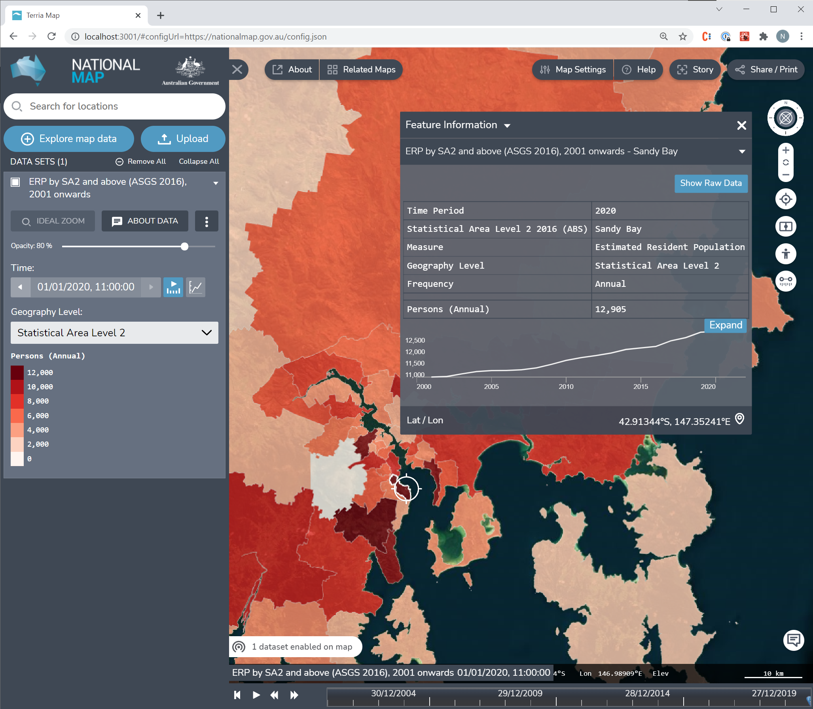</img>
## SDMX for you - ABS Data API (Beta) just launched - Pacific Data Hub ([pacificdata.org](pacificdata.org)) - and many more... (sponsor organisations) 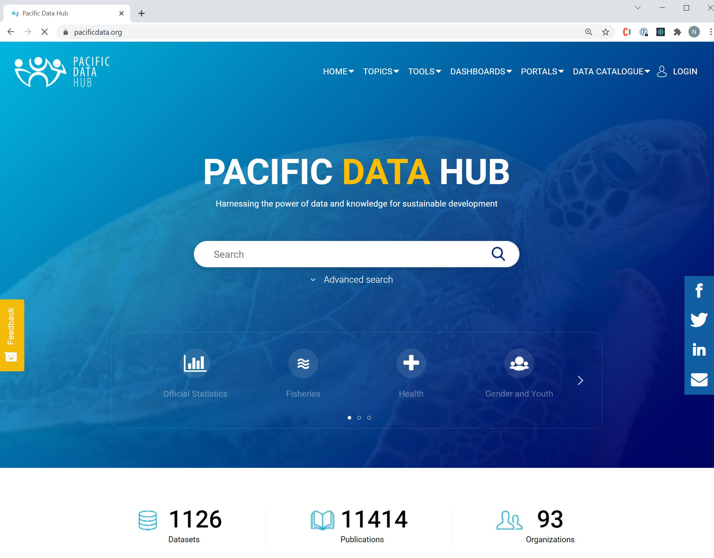</img>
## Information Model 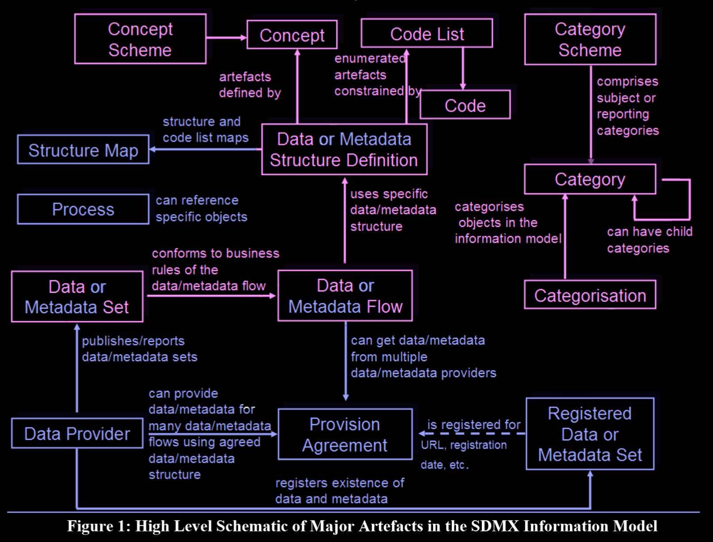</img> <span style="font-weight: 100; font-size: 50%;">[SDMX STANDARDS: SECTION 1 - FRAMEWORK FOR SDMX TECHNICAL STANDARDS (VERSION 2.1)](https://sdmx.org/wp-content/uploads/SDMX_2-1_SECTION_1_Framework.pdf)</span>
## Dataflow A **dataset** conforms to business rules of a **dataflow** A **dataflow** will contain: - Annotations (comments) - Description - Name A **dataflow** uses a specific **data structure definition** <span style="font-weight: 100; font-size: 50%;">Adapted from [UNSD SDMX Session 4 - Intro to SDMX Data Modeling](https://www.unescap.org/sites/default/files/Session_4_SDMX_Data_Modeling_%20Intro_UNSD_WS_National_SDG_10-13Sep2019.pdf)</span>
## Data Structure Def. (DSD) - **Measures** - values/observations - (what we want to show on a map) - **Dimensions** - uniquely identifying characteristics (includes time) - can be used to idenfity observations - **Attributes** - additional characteristics that further describe it - additional information about observations *Think columns in a table* <span style="font-weight: 100; font-size: 50%;">Adapted from [UNSD SDMX Session 4 - Intro to SDMX Data Modeling](https://www.unescap.org/sites/default/files/Session_4_SDMX_Data_Modeling_%20Intro_UNSD_WS_National_SDG_10-13Sep2019.pdf)</span>
## Dataflow example From Pacific Data Hub - **International Merchandise Trade Statistics** [](https://stats-nsi-stable.pacificdata.org/rest/data/DF_IMTS/A..AMT.TB._T._T._T.DOM) <span style="font-weight: 100; font-size: 75%;">International Merchandise Trade Statistics for the Pacific island countries and territories since 2000, per year, primary partner area, trade flow, mode of transport to the border and type of commodity.</span> 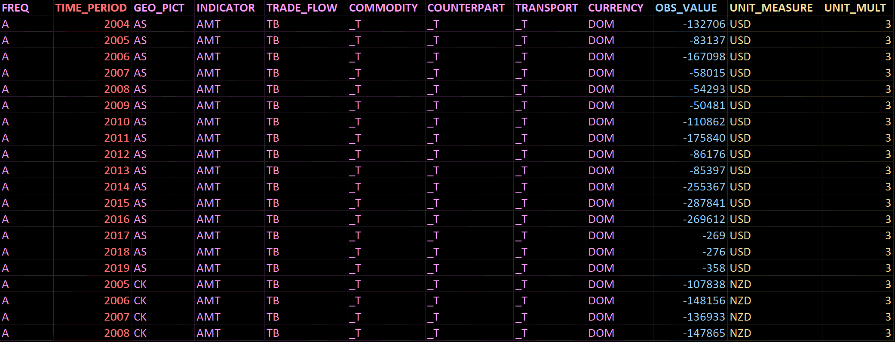</img>
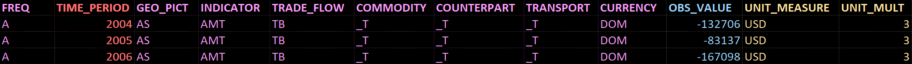</img> <ul> <li style="color: #fd98ee;">Purple = dimension</li> <li style="color: #ff6c6c;">Red = time dimension</li> <li style="color: #8ed5ff;">Blue = measure / observation value</li> <li style="color: #e7cc8b;">Yellow = attribute</li> </ul>
</img> Each dimension, measure and attribute has a **concept** - which can be: - **code list** (eg country code) - specific data format (eg "YYYY" date) - specific range of values (eg numerical [0,1] ). - any type of values (eg "text") <span style="font-weight: 100; font-size: 50%;">Adapted from [UNSD SDMX Session 4 - Intro to SDMX Data Modeling](https://www.unescap.org/sites/default/files/Session_4_SDMX_Data_Modeling_%20Intro_UNSD_WS_National_SDG_10-13Sep2019.pdf)</span>
Enumerated dimensions will have a **code list:** - A predefined “lookup” list with all possible values for a concept - Maps values to natural language descriptors (multiple languages) - For example - Countries (AU = "Australia") - Sex (M = "Male") Dataflow may also have **content constraints:** - Subset of the possible values of codelist for given workflow - "Restricts" possible values <span style="font-weight: 100; font-size: 50%;">Adapted from [UNSD SDMX Session 4 - Intro to SDMX Data Modeling](https://www.unescap.org/sites/default/files/Session_4_SDMX_Data_Modeling_%20Intro_UNSD_WS_National_SDG_10-13Sep2019.pdf)</span>
## `FREQ` dimension </img> - `FREQ` **concept**: "Frequency" - `FREQ` **codelist**: "Common codelist for data frequencies" - `X` = Non-periodic - `A` = Annual - `Q` = Quarterly - `M` = Monthly - `D` = Daily - `FREQ` **content constraint** (for `DF_IMTS` dataflow) - `A` = Annual - `M` = Monthly
## `GEO_PICT` dimension </img> - `GEO_PICT` **concept**: "Pacific Island Countries and territories" (PICTs) - `GEO_PICT` **codelist**: "Common hierarchical codelist for PICTs" - `AS` = American Samoa - `CK` = Cook Islands - `FJ` = Fiji - ... - `GEO_PICT` **content constraint** (for `DF_IMTS` dataflow) - 22 PICTs - `AS`, `CK`, `FJ`, `FM`, `GU`, `KI`, `MH`, `MP`, `NC`, `NR`, `NU`, `PF`, `PG`, `PN`, `PW`, `SB`, `TK`, `TO`, `TV`, `VU`, `WF`, `WS`
## `INDICATOR` dimension </img> - `INDICATOR` **concept**: "Indicator" - `INDICATOR` **codelist**: "Codelist for IMTS indicators" - `AMT` = "Amount" - `GRO` = "Growth rate (annual % change in values)" - `PRP` = "Proportion of total" - `GDP` = "Percentage of GDP" - `PCA` = "Amount per capita" - `INDICATOR` **content constraint** (for `DF_IMTS` dataflow) - All 5 values...
## Everything else </img> - **`TRADE_FLOW`** = `TB` = "Trade Balance" - **`CURRENCY`** = `DOM` = "Domestic Currency" - `_T` = "Total" - **`OBS_VALUE`** measure = what we are interested in - **`UNIT_MEASURE`** attribute = units - **`UNIT_MULT`** attribute = unit multiplier - (`OBS_VALUE * 10^x`) **`UNIT_MEASURE`** and **`UNIT_MULT`** are common Sustainable Development Goals (SDG) attributes <span style="font-weight: 100; font-size: 50%;">(search "sdg dsd" for more info)</span>
## Data query </img> Query **`DF_IMTS`** dataflow for subsets of dimension values: - Frequency = **`A`** = "Annual" - Indicator = **`AMT`** = "Amount" Can return data as: **CSV**, JSON, XML [https://stats-nsi-stable.pacificdata.org/rest/data/DF_IMTS/A..AMT.....](https://stats-nsi-stable.pacificdata.org/rest/data/DF_IMTS/A..AMT.....) - **`DF_IMTS`** dataflow - **`A..AMT.....`** key - period-delimited dimension values (can be empty for wildcard)
</img><br/> In Terria! 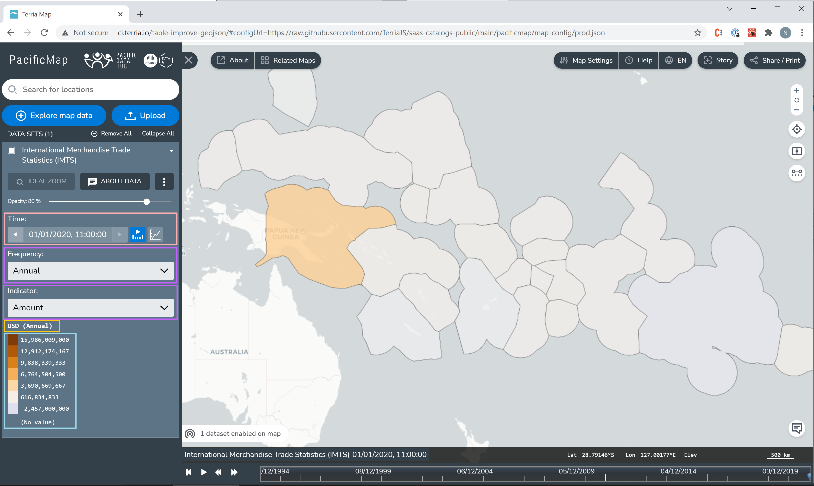</img>
</img><br/> With **codelist**/**content constraints** 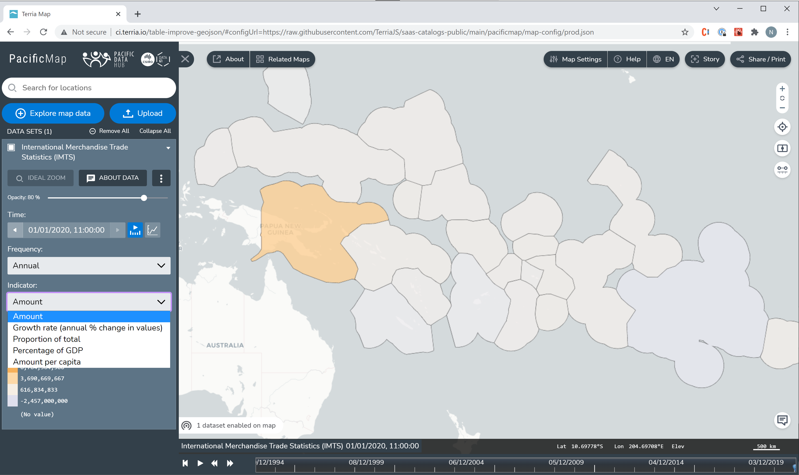</img>
## Region mapping 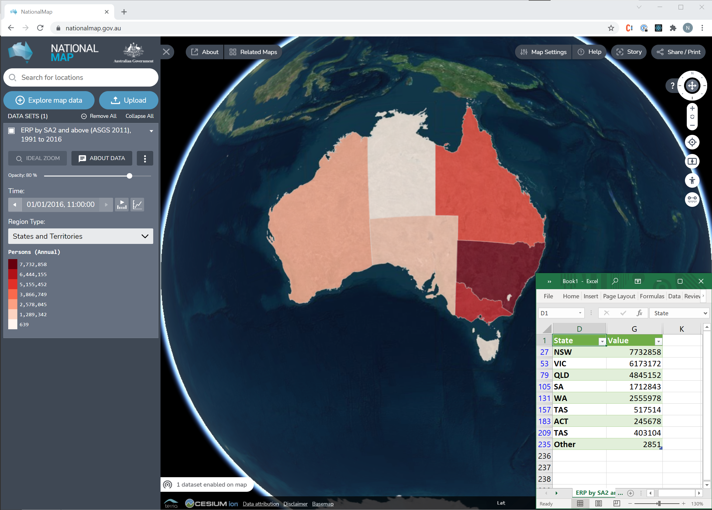</img> - Vector tile based - Matches region geometry to rows in a table - Terria supports over 100 region sets
## Information Model (again!) </img> <span style="font-weight: 100; font-size: 50%;">[SDMX STANDARDS: SECTION 1 - FRAMEWORK FOR SDMX TECHNICAL STANDARDS (VERSION 2.1)](https://sdmx.org/wp-content/uploads/SDMX_2-1_SECTION_1_Framework.pdf)</span>
## Data discovery How do we discover **dataflows** and organise them - **Agency scheme**/**agencies** contain **category schemes** - **Category scheme** contains tree of **categories** - **Categorisation** maps **dataflow** to **category**
## Category schemes (red) 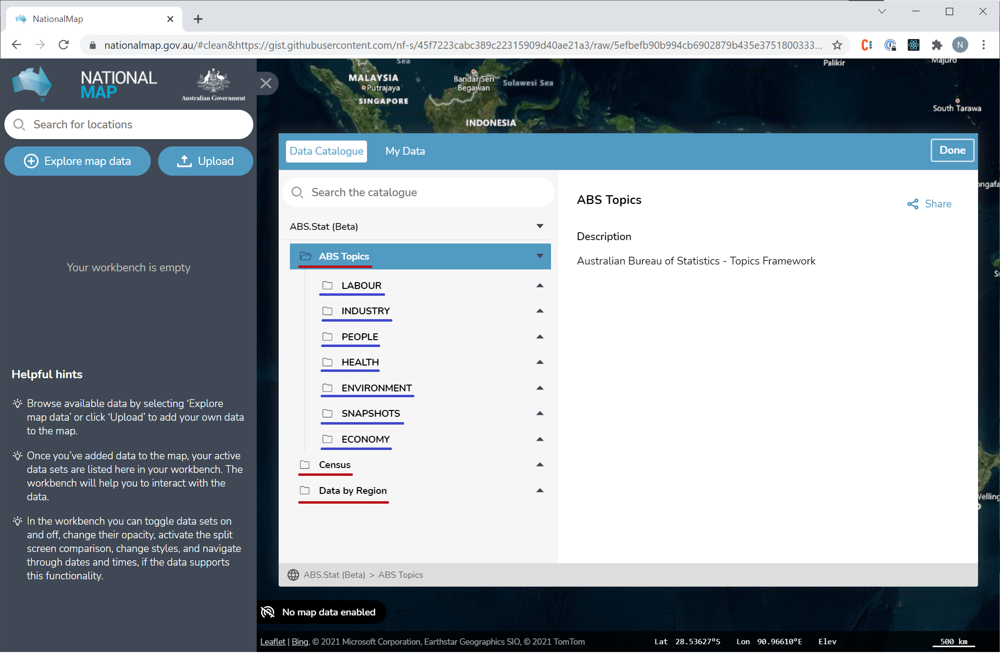</img>
## Categories (blue) 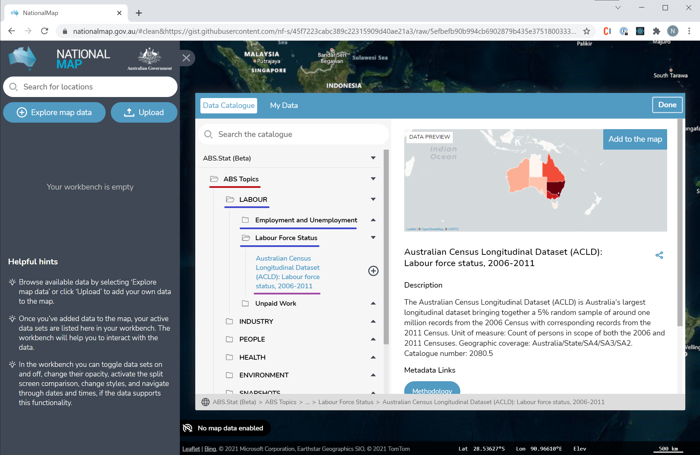</img> Dataflow is purple
## Dataflow (metadata) 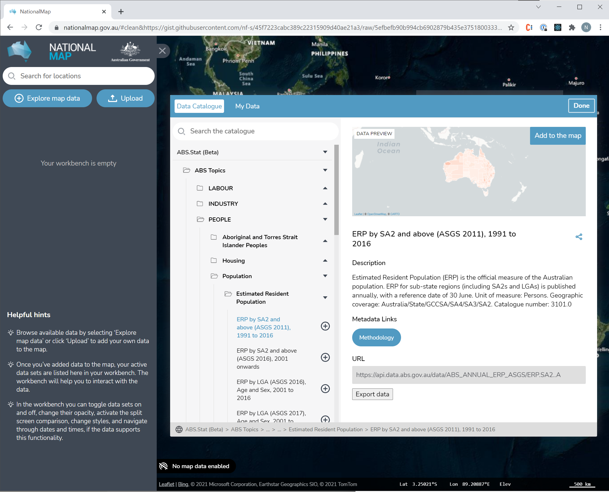</img>
Demo
## Fin - [NationalMap](https://nationalmap.gov.au) - [ABS Data Api (Beta)](https://api.gov.au/service/715cdfd0-4742-402e-8729-086a7fd42a51) - [PacificMap](https://map.pacificdata.org) - [Pacific Data Hub](https://pacificdata.org/) - [UNSD SDMX Session 4 - Intro to SDMX Data Modeling](https://www.unescap.org/sites/default/files/Session_4_SDMX_Data_Modeling_%20Intro_UNSD_WS_National_SDG_10-13Sep2019.pdf) - [Learning about SDMX Basics](https://sdmx.org/?page_id=2555/) - [Eurostat's SDMX InfoSpace](https://ec.europa.eu/eurostat/web/sdmx-infospace/) - ["Clickable" Information model](https://statswiki.unece.org/display/ClickSDMX/Clickable+SDMX+Home) - [SDMX User Guide](https://sdmx.org/wp-content/uploads/SDMX_2-1_User_Guide_draft_0-1.pdf) - [.Stat SDMX REST Cheatsheet](https://sis-cc.gitlab.io/dotstatsuite-documentation/using-api/restful/) - [Official SDMX REST Cheatsheet](https://github.com/sdmx-twg/sdmx-rest/blob/master/doc/rest_cheat_sheet.pdf)
213.244.242.6